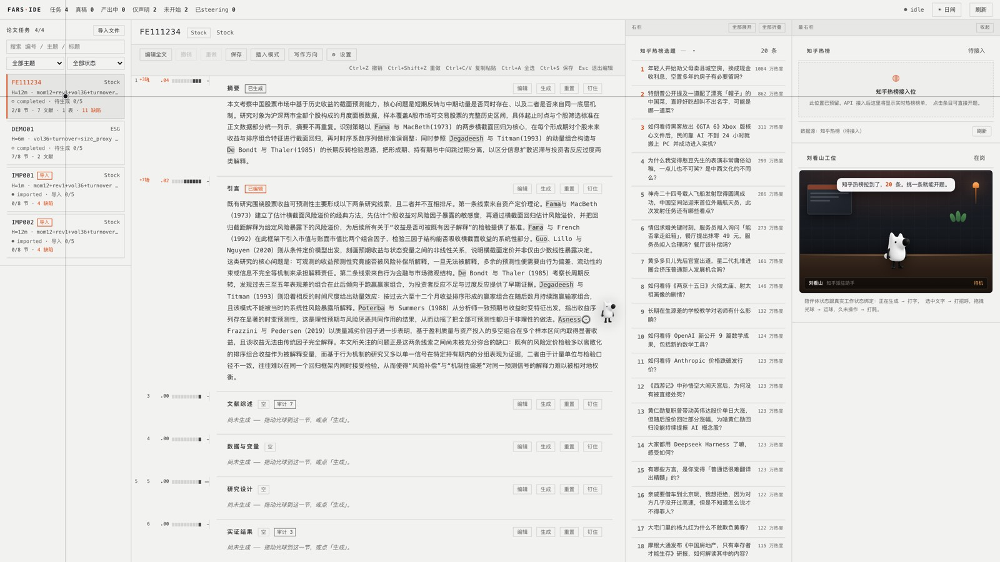
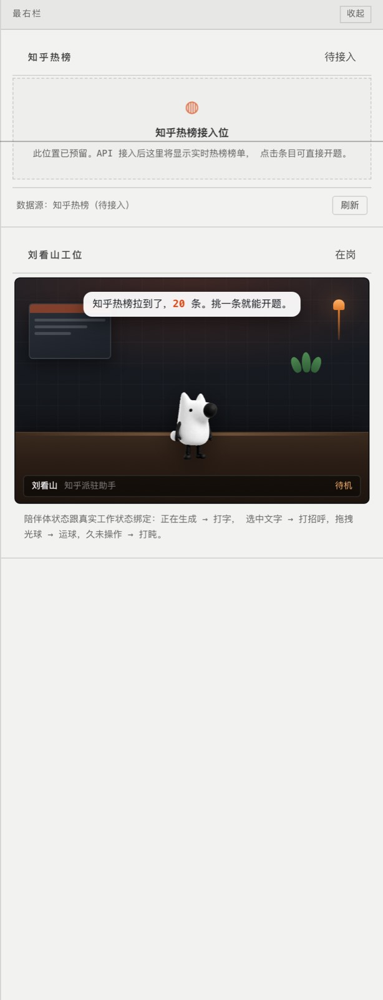
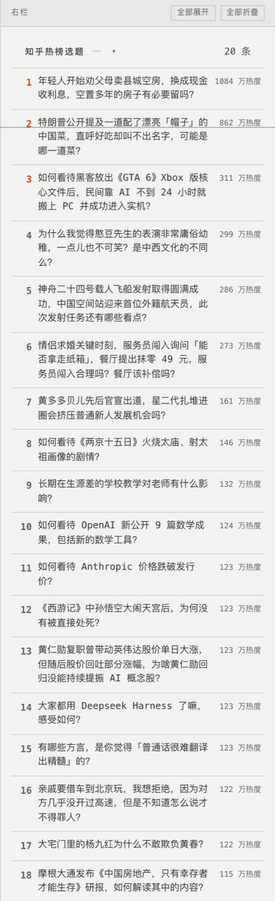

FARS Dashboard 把「选题 → 文献 → 数据 → 方法 → 结果 → 稳健性 → 结论」的每一步 都挂在一条可重现工作流上：没有真实产物，系统不允许你推进到下一节。 全部计算在你的本机跑，论文与 API Key 不出本地。
不是一个「AI 写作按钮」，而是一套带约束的研究环境 —— 每个面板里的数字都来自真实的回归结果与真实抓取的文献。
四步强制链条：备齐真实产物 → 派生大纲 → 逐节写作 → 完整性审计。缺产物就卡住，不给「跳过」的按钮。
双击光球展开扇形菜单，按当前上下文给出写作方向候选，每一条都附带「依据」，来源可查。
正文里左键选词 → 松开即弹出带依据的修改建议 → 应用后当场落盘。不是伪预览。
因子系数 / t 值 / p 值 / 显著性一目了然，图表可拖拽调整，窗口可切换，图随参数重算。
正文里的实体框 = 真实出现位置（回归表因子名、文献作者姓）。可拖动、可双击删除该次提及。
知乎热榜实时抓取，点一条直接开题；刘看山陪伴体状态与真实工作状态绑定，不做随机装饰。
整套 UI 双模式，对比度按 WCAG AA 数值化校验，两种模式最低 5.28:1，浅底不糊字。
论文、正文、API Key 全在本机。Key 存 macOS 钥匙串，安装包不含任何密钥与论文数据。
以下均为真实运行实例截图 —— 界面为实际运行状态，知乎热榜为实时抓取的真实数据。



每一节独立状态、独立审计、独立可追溯。这是实证论文的骨架，也是 FARS 的工作单元。
| 项目 | 说明 |
|---|---|
| 运行时 | Python 3.9+ / macOS arm64，也可从源码在 Linux 运行 |
| 前端 | 单文件 index.html（12k+ 行），零构建、零依赖、离线可用 |
| 统计栈 | numpy · pandas · statsmodels · scipy |
| 文档解析 | python-docx（docx）· pypdf / PyMuPDF（pdf） |
| 打包 | PyInstaller onefile，启动约 12 秒（需解压运行时） |
| 数据位置 | ~/Library/Application Support/FARS Dashboard/ |
| 密钥存放 | macOS 钥匙串 —— 不写代码、不写配置、不进仓库 |
| 对比度 | 双主题 WCAG AA，最低 5.28:1（数值化校验，非肉眼判断） |